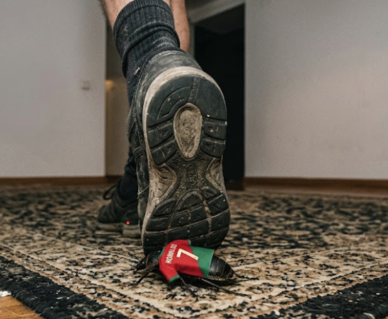

Twitter'da profilinde portekiz bayrağı taşıyan kullanıcıların tweetlerini tarayıcınızda gizleyin.
5 dolarım olmadığı için extension storeye atmadım
Profil adındaki bayrak emojilerini hem text hem img render olarak yakalar.
İstediğiniz emoji veya bayrağı popup'tan ekleyin, anında çalışsın.
requestAnimationFrame debounce ile sayfayı yavaşlatmadan çalışır.
API yok, veri yok, network isteği yok. Sadece kendi tarayıcınızda.
Toggle ile kapatın, gizlenen tweetler anında geri gelsin.
Her iki domain üzerinde de sorunsuz çalışır.
Yukarıdaki butona tıklayarak eklenti dosyalarını indirin ve ZIP'i çıkarın.
Chrome adres çubuğuna aşağıdakini yazın:
chrome://extensions
Sağ üst köşedeki "Geliştirici modu" toggle'ını aktif edin.
"Paketlenmemiş öğe yükle" butonuna tıklayıp ZIP'ten çıkan x-flag-filter klasörünü seçin.
x.com veya twitter.com'a gidin. Eklenti otomatik çalışır. Popup'tan bayrak ekleyip çıkarabilirsiniz.